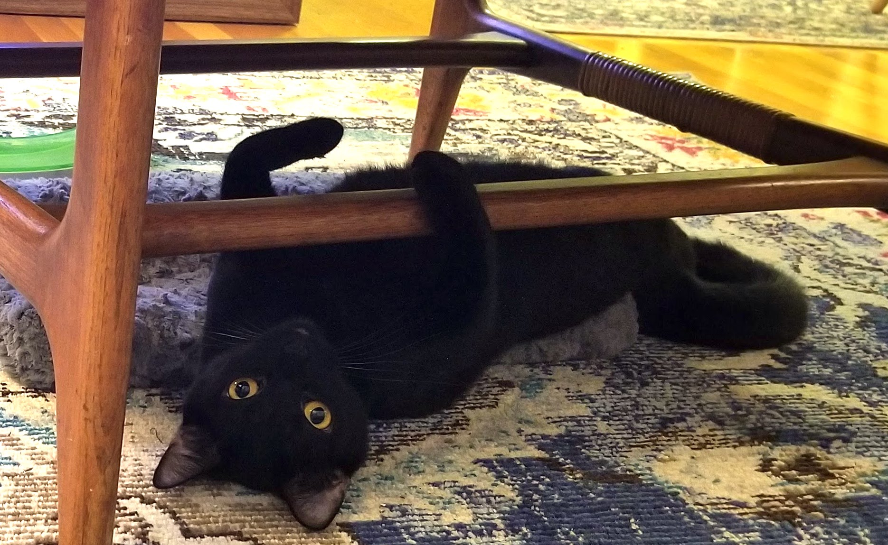

So you know who I am, and what I do, but what am I like?
Here are a few things I'm guaranteed to want to talk about:
- Books. I love to read. I love to hear what you're reading. I love to talk about what I'm reading.
- Tabletop Role Playing Games. I still feel like a baby rp-er, but after 2 years of dnd, and experience in many other systems, maybe I can't claim that anymore.
- Food. Great new restaurants. Old favorites. Exciting new recipes. That new Bon Apetit video. A new cookbook. Holiday meal planning. Great British Bake Off....
- My sourdough starter. Speaking of food - isn't fermentation amazing! Let's talk healthy bacteria!
- My cats. They're really cute. I'd argue the cutest. Also, the many virtues of adopting bonded pairs.
- Traveling. I love to hear about places people have been, and share memories of great places around the world.